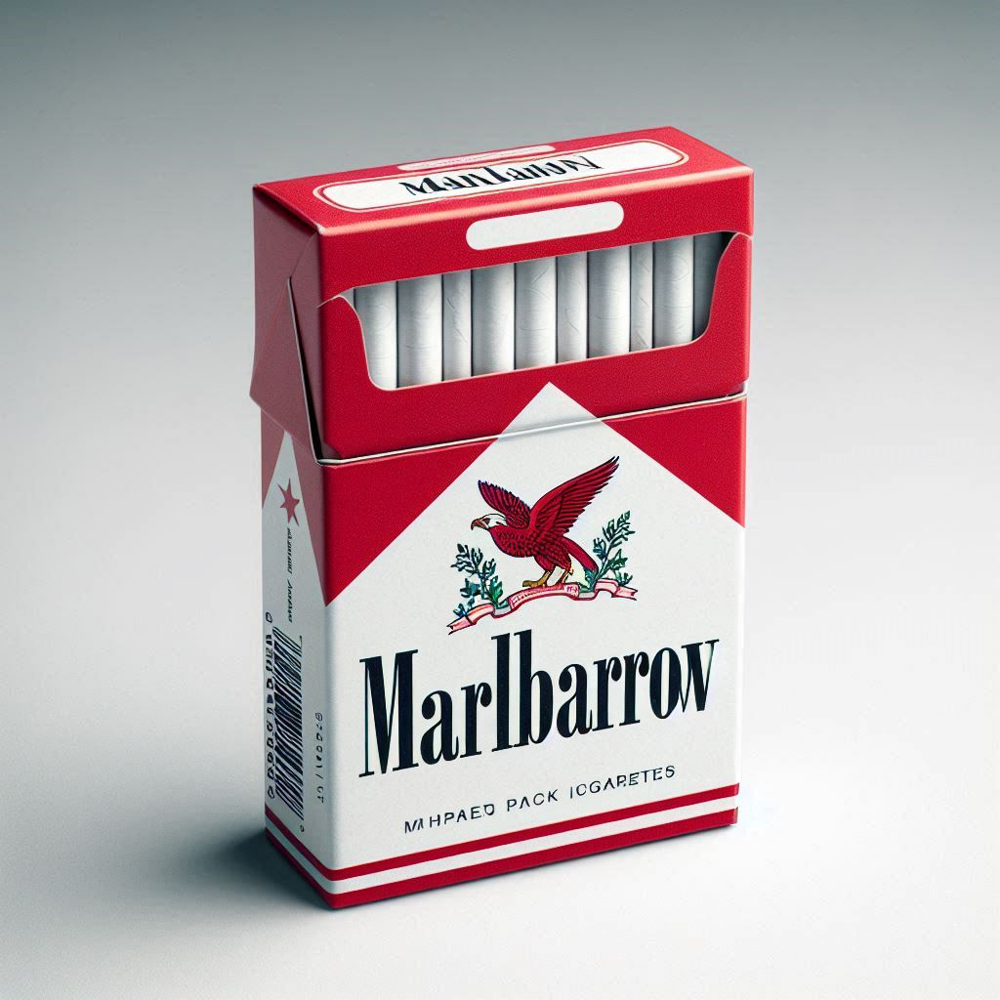
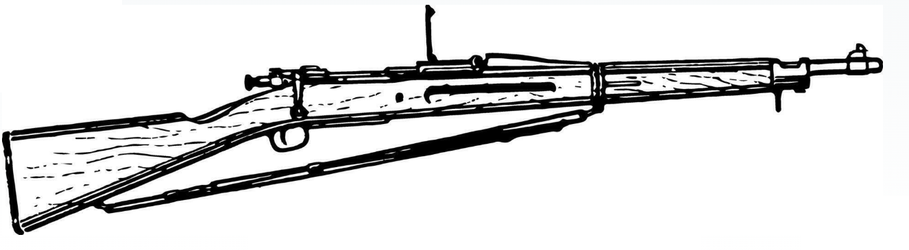

Our next highlight in this issue is aimed directly at those of you who love to visit the central Savannahs of Eaphrike for some good ol' trophy hunting. Wether you are trying to take down a DRAGON to mount on your wall or pierce a
Bulette's armor, then this weapon is for you. More powerful than your starndard .308 and even .30-06 rifles, this weapon packs quite a punch. Though its trapdoor action only allows the loading of a single bullet at a time making it slower than both bolt-actions
and lever-action rifles, in theory one shot is all you should need.
With a devastating 5d12 of damage on a hit this weapon is sure to crack even the thoughest of foes. The scope on top offers a magnificent +3 to hit and performs at 300ft without problem and up to 1000ft should you need and should you decide to
splurge and purchase the custom ammunition available from any premium Smith & Westwood gun store, you can fire a round calling back to the oldest stories with the life leeching powers of the vampire, transfering the damage you dealt, back
to yourself an be restored. Who needs to go the temple for a beating when you can feel restored with the pull of a trigger!
Now of course, the price, for the prestigious amongst you it should be no problem shelling out the 12000g
or bc equivalent for this power house. Throw in an extra 500g and you get a box of Carver ammunition with your purchase and we'll even throw in a little Marlbarrow pack for free. Now that's a deal
Springshield 873 & Imperial Repeater - The frugal cowboys choice
That's all well and good but as always Smith & Westwood likes to serve all customers, so what's on the market for right now for a gunslinger out west just looking for a high powered rifle?
I'm glad you asked, see if you're not looking to take on natures most naturally armored creatures then you won't need more than the good ol' .308 bullet, and maybe .30-06. Now the difference
is some handling and some power between
the two but mostly negligible, refer to the backside of this magazine for some ammunition breakdowns. The main differences are of course the rifles
themselves. For the .30-06, the more powerful of the two options you're looking at something like
the Springshield 873, a bolt action rifle that will kick your shoulder out if you let it. Its got a
solid 5 bullet capacity and a scores 2d10s of dmg. It's not gonna offer you any sight advantages unless you buy extra but it will function well up to 200ft and works
all the way to 800ft. It is on
the heavier side so you'll need the STR to wield it properly which should be considered before purchase. Now for the more reliable .308 rifle you're looking for the Imperial Repeater, a lever-action
that offers a lot
when it comes to usability. The smaller caliber means its easier to hit, meaning as long as you're using the recommended bullet you'll be enjoying a nice +1 to hit. Though it falls
short in terms of dmg (2d8) compared to the heavier Springshield, it's
light enough that even your local Halfling Shriekshroom farmer can use to protect his crops. The range remains about the
same. These rifles can be accuired dirt cheap as well since they've been on the market for a while, running you between 15-60g or bc equivalent
depend on how new the rifle is.


Springshield 873
blueprint